Save pointsSave points
Os jogos que me formaram.The games that shaped me.
Não é uma lista de jogos. É o que cada gênero significou pra minha geração e o que deixou em mim.This isn't a list of games. It's what each genre meant to my generation and what it left in me.
O que jogo significa pra mimWhat games mean to me
Sou de 1997. Cresci vendo os jogos mudarem na minha frente: do Game Boy pro PS1, do PS1 pro PS2, a chegada dos primeiros MMORPGs no Brasil, as lan houses em cada esquina, até os mundos gigantes de hoje. Minha geração cresceu junto com essa evolução.I was born in 1997. I grew up watching games change right in front of me: from the Game Boy to the PS1, from the PS1 to the PS2, the first MMORPGs arriving in Brazil, internet cafés on every corner, all the way to today's huge worlds. My generation grew up alongside that evolution.
E jogo, pra mim, nunca foi só passatempo. Foi o primeiro lugar onde eu me senti dentro de outro mundo, onde eu aprendi a dividir as coisas com quem eu gosto e onde eu aprendi a perder e tentar de novo.And games were never just a pastime for me. They were the first place I felt inside another world, where I learned to share things with the people I love and where I learned to lose and try again.
Aqui vai, gênero por gênero, o que cada um significou pra minha geração e pra mim.Here it is, genre by genre: what each one meant to my generation and to me.
MMORPGsMMORPGs
Ragnarok Online · Perfect World · Grand Chase · Lineage 2 · Aion · Forsaken World · World of Warcraft · Final Fantasy XIV · Black Desert
Pra minha geração, a chegada dos MMORPGs no Brasil foi um choque. De repente o jogo não acabava quando você desligava o computador: o mundo continuava lá, cheio de gente de verdade. Muitos chegavam traduzidos, alguns num CD que vinha com revista, e lotavam as lan houses.For my generation, MMORPGs arriving in Brazil were a shock. Suddenly the game didn't end when you turned the computer off: the world kept going, full of real people. Many arrived translated, some on a CD bundled with a magazine, and packed the internet cafés.
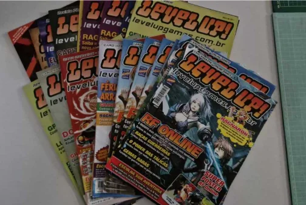
O meu primeiro foi o Ragnarok. Ganhei o CD da minha avó aos 7 anos, entrei com o meu primo e nunca mais larguei. Jogo até hoje, no servidor LATAM.My first was Ragnarok. My grandmother gave me the CD when I was 7, I jumped in with my cousin and never let go. I still play it today, on the LATAM server.
O que mais me encantava era o worldbuilding: as trilhas sonoras, os mapas, os monstros, as criaturas, as missões e as histórias escondidas em cada canto. Ter contato com isso tão cedo me fez enxergar o tamanho da liberdade criativa que existe num jogo.What enchanted me most was the worldbuilding: the soundtracks, the maps, the monsters, the creatures, the quests and the stories hidden in every corner. Being exposed to that so early showed me how much creative freedom a game can hold.
Sabe quando você sai de um filme muito bom no cinema e despenca de volta na vida real? Aquele vazio meio de luto, que não dá pra descrever direito. Era isso que eu sentia ao fechar o jogo. E até hoje é esse o sentimento que eu queria um dia causar em alguém.You know when you walk out of a really good movie and crash back into real life? That empty, almost grieving feeling you can't quite describe. That's what I felt when I closed the game. And to this day, that's the feeling I'd like to give someone one day.
Os jogos de lan houseInternet café games
Counter-Strike 1.6 · GTA San Andreas
Computador bom em casa era raro, então a lan house virou a rede social antes da rede social. Era lá que a gente se encontrava, jogava lado a lado e resolvia rivalidade no Counter-Strike.A good home computer was rare, so the internet café became the social network before social networks. That's where we met up, played side by side and settled rivalries in Counter-Strike.
A minha era a Intergames, em Caruaru, pertinho do Colégio Diocesano. Foi ali que eu aprendi que jogo bom é jogo dividido. As lan houses quase sumiram, mas muito do que eu sou começou ali.Mine was Intergames, in Caruaru, right by Colégio Diocesano. That's where I learned a good game is a shared game. Internet cafés have almost disappeared, but a lot of who I am started there.
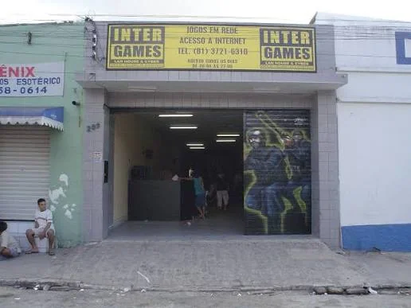
A era do PlayStation 2The PlayStation 2 era
God of War · GTA San Andreas · Manhunt · The Sims 2
O PS2 foi o videogame da minha geração. Foi quando os jogos ganharam cara de cinema: história grande, mundo aberto, cena épica. GTA San Andreas virou assunto de escola, e God of War mostrou que jogo podia ser tão épico quanto um filme.The PS2 was my generation's console. It's when games started to feel like movies: big stories, open worlds, epic scenes. GTA San Andreas became the talk of school, and God of War showed a game could be as epic as a film.
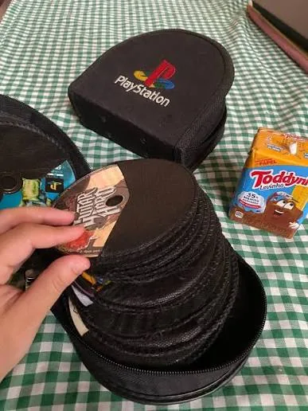
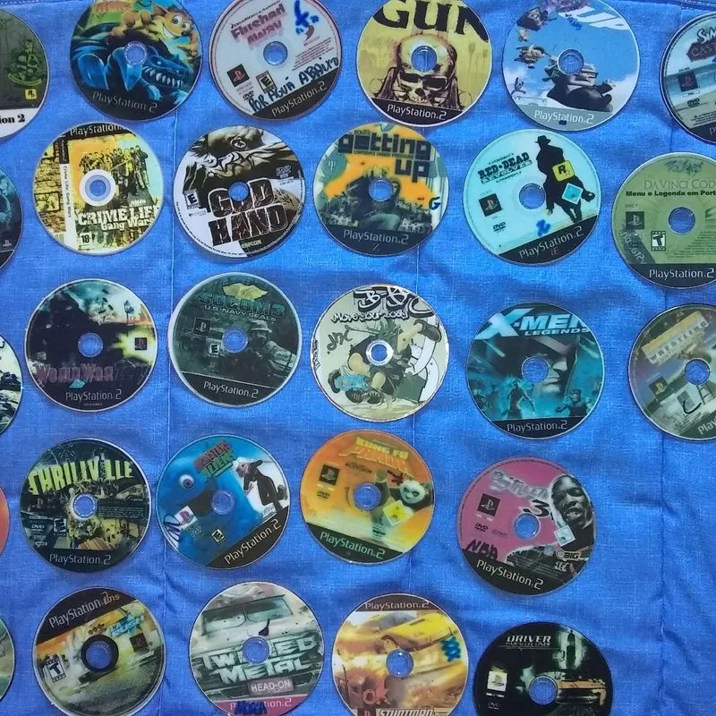
Antes de saber o que era programar, eu já gostava das três coisas que até hoje me prendem num jogo: história grande, sistema bem feito e liberdade pra criar.Before I knew what programming was, I already loved the three things that still hook me on a game today: big stories, well-made systems and freedom to create.
RPG de ação e theory craftingAction RPGs and theorycrafting
Diablo II: Lord of Destruction · Path of Exile · Path of Exile 2
Diablo II definiu um gênero inteiro: descer no calabouço, achar o item raro, montar o personagem perfeito. Path of Exile pegou essa herança e levou ao extremo, com uma árvore de habilidades gigantesca.Diablo II defined a whole genre: go down the dungeon, find the rare item, build the perfect character. Path of Exile took that legacy to the extreme, with a gigantic skill tree.
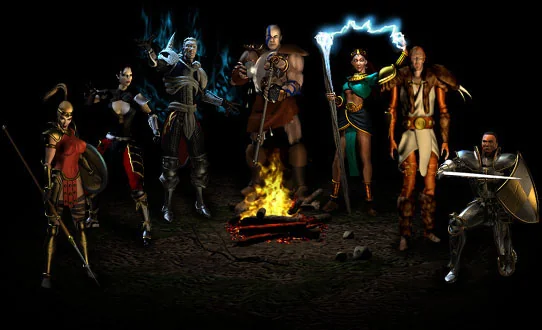
Joguei Diablo II: Lord of Destruction com os meus primos mais velhos, bem antes de existir o Resurrected. E no Path of Exile eu viro cientista maluco: passo horas teorizando build, calculando escala de poder e testando uma ideia até ela funcionar. É o lado de mim que gosta de entender o sistema por dentro.I played Diablo II: Lord of Destruction with my older cousins, long before Resurrected existed. And in Path of Exile I turn into a mad scientist: I spend hours theorycrafting builds, calculating power scaling and testing an idea until it works. It's the side of me that loves understanding a system from the inside.
Minha classe favorita · Druida · Path of Exile 2My favorite class · Druid · Path of Exile 2
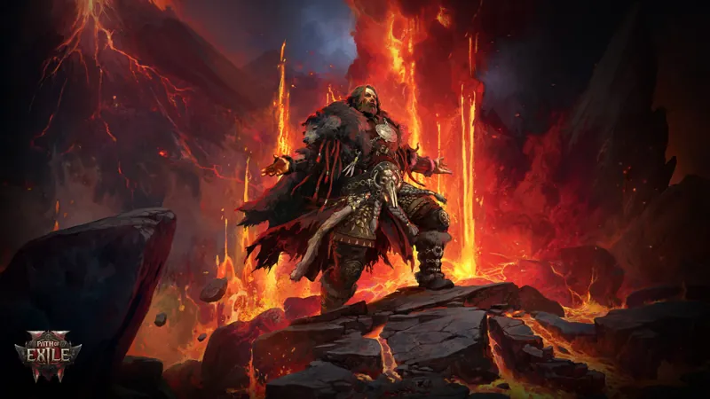
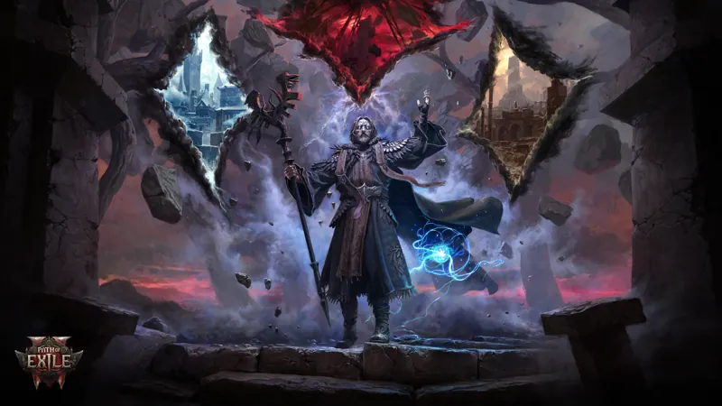
SoulslikeSoulslike
Sekiro · Elden Ring · Dark Souls · Dark Souls II · Dark Souls III · Black Myth: Wukong
Os souls vieram na contramão de tudo. Numa época em que os jogos pegavam o jogador pela mão, a FromSoftware fez jogos que exigem paciência e respeitam a sua inteligência. Elden Ring levou isso pro mundo inteiro.Souls games went against the grain. At a time when games held the player's hand, FromSoftware made games that demand patience and respect your intelligence. Elden Ring took that to the whole world.
Saí do Sekiro com uma derrota psicológica. Voltei pelo Elden Ring, passei pela trilogia Dark Souls, voltei pro Sekiro e fiz a platina. E no fim, o Dark Souls II, que tem a lore mais rica de todos pra mim.Sekiro left me psychologically defeated. I came back through Elden Ring, went through the Dark Souls trilogy, returned to Sekiro and got the platinum. And last, Dark Souls II, which has the richest lore of all to me.
Cair, entender o padrão e tentar de novo. Foi exatamente assim que eu troquei de carreira.Fall, learn the pattern, try again. That's exactly how I changed careers.
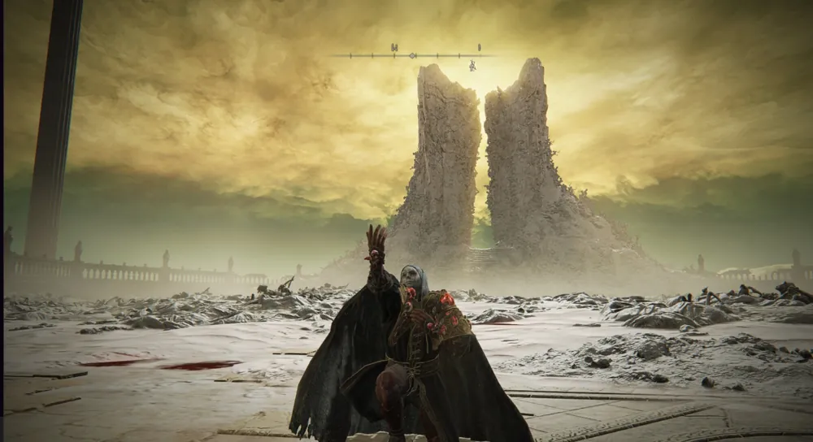
Meu GOTY de 2026My GOTY of 2026
Crimson Desert
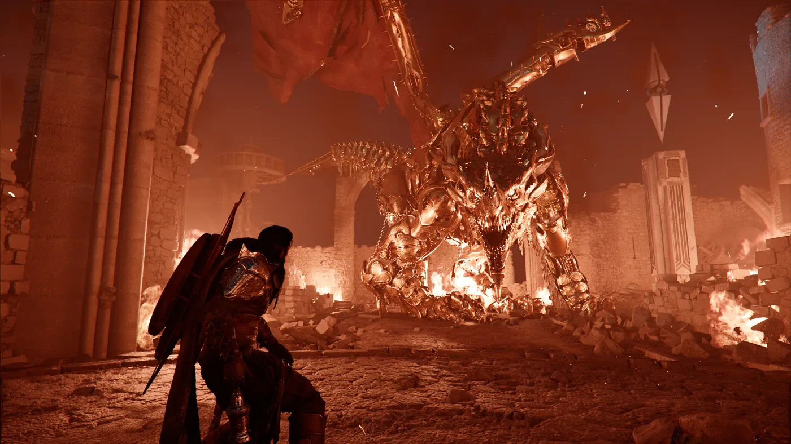
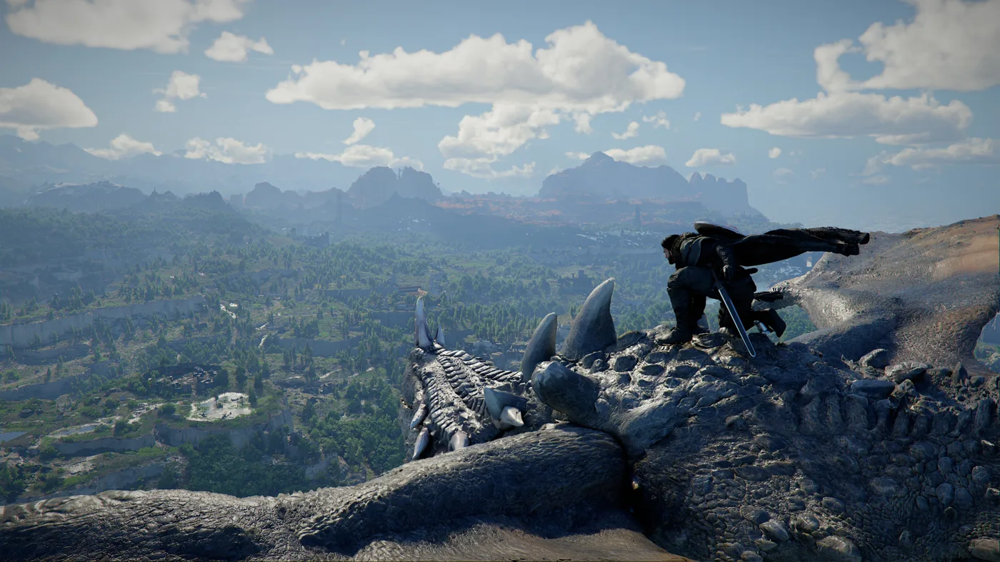
Crimson Desert é da Pearl Abyss, a mesma de Black Desert, e levou uns sete anos pra ficar pronto. Dá pra sentir cada um deles.Crimson Desert comes from Pearl Abyss, the same studio behind Black Desert, and it took around seven years to make. You can feel every one of them.
O continente de Pywel é exatamente o tipo de mundo que eu descrevi lá em cima, nos MMORPGs: enorme, cheio de detalhe, com cidade viva, lanterna iluminando a estrada de noite e ilhas flutuando no céu. E o jogo quase não pega na sua mão, então cada descoberta parece sua de verdade.The continent of Pywel is exactly the kind of world I described up there, in the MMORPGs: huge, full of detail, with living cities, lanterns lighting the road at night and islands floating in the sky. And the game barely holds your hand, so every discovery feels truly yours.
O combate é diferente de tudo que eu já joguei: rápido, pesado, cheio de agarrão e de golpe que você nem imaginava que dava pra fazer.The combat is unlike anything I've played: fast, heavy, full of grabs and moves you didn't even know were possible.
Fui até a platina, e não tenho dúvida: é o meu GOTY de 2026. Se você ainda não jogou, vai por mim, joga.I went all the way to the platinum, and I have no doubt: it's my GOTY of 2026. If you haven't played it yet, trust me, play it.
Mobile e famíliaMobile and family
Brawl Stars
O celular colocou jogo na mão de todo mundo, de criança a adulto. Jogo virou coisa de família.Phones put games in everyone's hands, kids and adults alike. Gaming became a family thing.
Foram os meus sobrinhos que me apresentaram o Brawl Stars, em 2019. Desde então, é o jogo que junta a gente. Alguns jogos são sobre o mundo. Esse é sobre as pessoas.My nephews and nieces introduced me to Brawl Stars in 2019. Since then, it's the game that brings us together. Some games are about the world. This one is about the people.
E eu acompanho o competitivo também. Meus times favoritos são a HMBLE e a FUT, mas torço mais pela FUT, por causa do prodígio Guesti. Eles chegaram ao Mundial de 2026, em Tóquio, e eu tô na torcida.I follow the competitive scene too. My favorite teams are HMBLE and FUT, but I root for FUT the most, because of the prodigy Guesti. They made it to the 2026 World Finals in Tokyo, and I'm cheering them on.
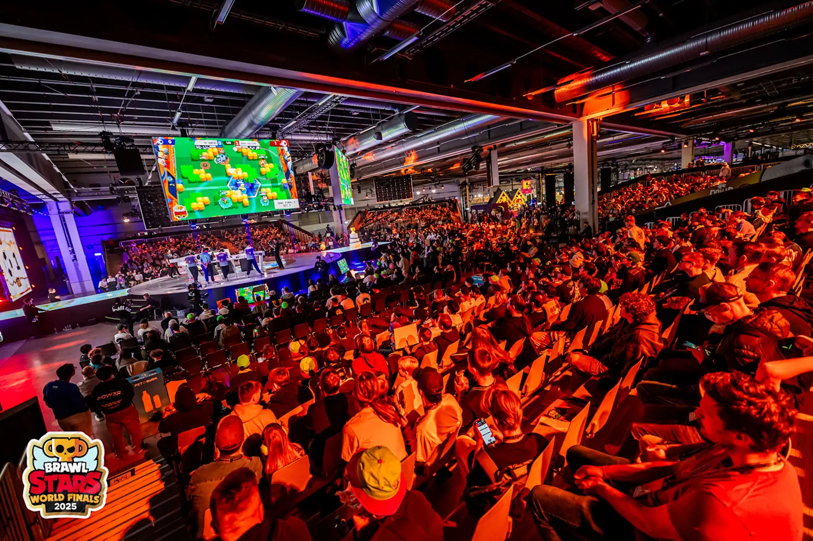
FechamentoClosing
No fim, todo jogo que me marcou tinha a mesma coisa: alguém do outro lado da tela que se importou. Com o mundo, com a história e com quem ia jogar. É esse cuidado que eu quero colocar em tudo o que eu construir.In the end, every game that marked me had the same thing: someone on the other side of the screen who cared. About the world, the story and the people who would play it. That care is what I want to put into everything I build.